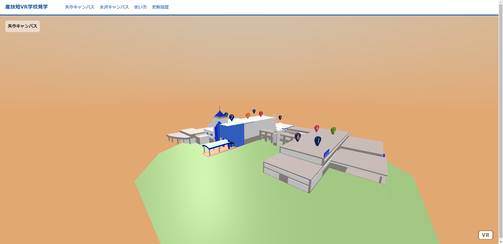

ようこそ！
バーチャル学校見学へ！

興味のある場所をクリックして
施設内をVR画像で見てみよう！
学校見学へGO!
産技短VR学校見学
矢巾キャンパス
水沢キャンパス
使い方
使い方
見学中に、スタート写真（校舎の外）に戻る。
クイズ形式で各教室のことをさらに詳しく知ることができるゲームをプレイできる。
音声ガイドをONにする。
音声ガイドをOFFにする。
ジャイロ機能を使う。（スマートフォンのみ）
ジャイロ機能を使わない。（スマートフォンのみ）
閉じる
更新履歴
ピン一覧
メカトロニクス技術科
電子技術科
建築科
産業デザイン科
情報技術科
専攻技術科
多目的ホール
体育館
学生ホール
学生寮
ピン一覧
生産技術科
電気技術科
建築設備科
本館
体育館
.png) 見学中に、スタート写真（校舎の外）に戻る。
見学中に、スタート写真（校舎の外）に戻る。.png) クイズ形式で各教室のことをさらに詳しく知ることができるゲームをプレイできる。
クイズ形式で各教室のことをさらに詳しく知ることができるゲームをプレイできる。 音声ガイドをONにする。
音声ガイドをONにする。 音声ガイドをOFFにする。
音声ガイドをOFFにする。 ジャイロ機能を使う。（スマートフォンのみ）
ジャイロ機能を使う。（スマートフォンのみ）
 ジャイロ機能を使わない。（スマートフォンのみ）
ジャイロ機能を使わない。（スマートフォンのみ）